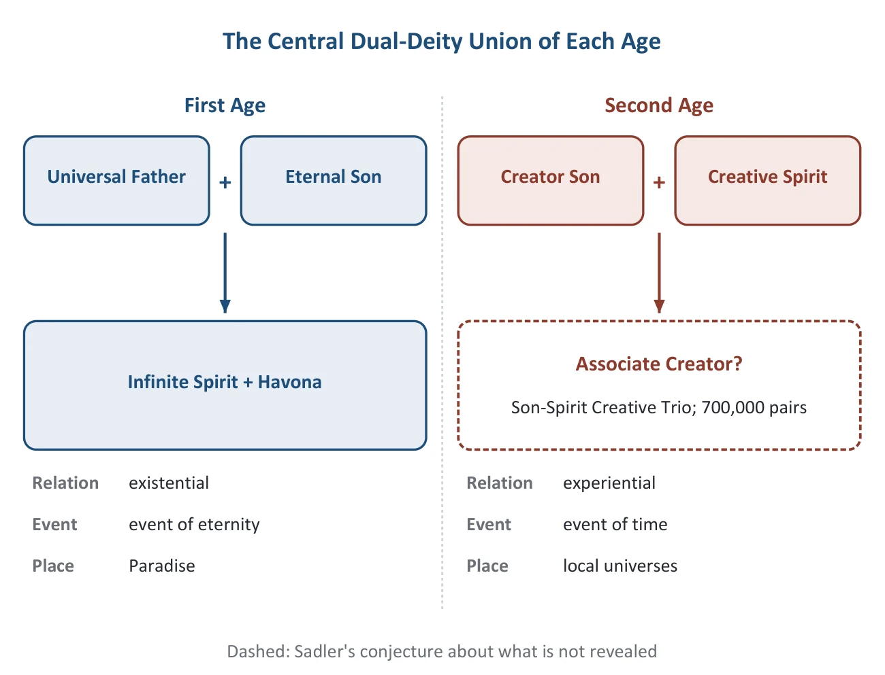

A primeira síntese: Deus, o Supremo
Original: A História Finita, capítulo III, Primeira síntese: Deus, o Supremo (pp. 48–55)
NESTE CAPÍTULO
Ao terminar a segunda idade, a luz e vida estabelece-se em todos os sete superuniversos, e o Ser Supremo emerge para governar experiencialmente os superuniversos perfeccionados. Sadler vê nisso a primeira síntese, que liga a perfeição de Havona (tese) e os superuniversos perfeccionados (antítese). Ele encontra o mesmo tipo de síntese na trinitarização de finalitores com nativos de Havona, na convergência das culturas dos sete superuniversos e na parceria entre o Filho Criador e o Espírito Criativo. Boa parte da segunda metade do capítulo é raciocínio de Sadler sobre um futuro que não foi revelado.
1. Um tempo de quietude entre as idades (orig., pp. 48–49)
Uma promessa sobre o tempo verbal
Neste capítulo, o estudo de Sadler avança para o futuro do tempo. Por isso ele promete falar dos acontecimentos do período próprio de cada capítulo no presente, dos capítulos anteriores no passado e dos capítulos posteriores no futuro. Este comentário segue em geral a mesma prática.
A suposição de um tempo de quietude
Assim como há uma “zona de quietude” entre níveis espaciais adjacentes, Sadler supõe que possa haver também um “tempo de quietude” entre as idades do universo. O Livro de Urântia não diz isso diretamente; é uma analogia de Sadler, que raciocina da estrutura do espaço para a estrutura do tempo. A suposição permite-lhe considerar à parte a realização completa do destino evolucionário ao terminar a segunda idade, sem ter de tratar ao mesmo tempo dos acontecimentos ligados à fase inicial da idade seguinte.
Nesse tempo de quietude, o grande universo desfruta de um crescimento concluído, a satisfação do destino alcançado. O longo e árduo trabalho da evolução conquistou finalmente a sua vitória experiencial. Os Criadores Supremos responderam ao desafio da perfeição de Havona; o resultado são setecentos mil universos locais perfeccionados, coroados pelo estabelecimento da luz e vida em todos os sete superuniversos.
Sadler compara a criação do tempo e do espaço desse período a um barco que recolheu os remos e descansa. Durante o tempo de quietude, o grande universo torna-se, como a Havona da primeira idade, uma criação autocontida: desfruta da satisfação em vez da labuta, consolida o que realizou e completa a sua unificação sob a soberania do Ser Supremo recém-emergido.
2. A emergência do Ser Supremo (orig., pp. 49–50)
Um Deus de quem se pode aproximar
O que leva a segunda idade ao ápice do crescimento finito é a emergência final do Ser Supremo como governante experiencial sobre os superuniversos perfeccionados. Uma Deidade até então inacessível torna-se uma Deidade com quem toda criatura pode entrar em contato. Deus, o Pai, sendo infinito, permanecerá sempre um mistério, mas Deus, o Supremo, sendo finito, pode ser compreendido pelas criaturas finitas. Como todas as criaturas finitas evoluíram juntas dentro dele, esse parentesco experiencial torna-se a base da compreensão mútua.
A realidade cósmica, designada de outra forma como Ser Supremo, como Deus, o Supremo, e como Todo-Poderoso Supremo, é a síntese complexa e universal das fases emergentes de todas as realidades finitas.117:3.1
O nível supremo: de sair para fora a recolher para dentro
Aqui Sadler chega ao sexto nível em que a Deidade Total funciona, o nível supremo. Ele dispõe os níveis em três grupos. Os níveis estático, potencial e associativo são pré-criativos, os níveis em que a Deidade se preparou para a aventura de sair para o tempo e o espaço. Os níveis criativo e evolucionário são níveis de “saída”, nos quais a Deidade se distribui por toda a criação e se identifica com as criaturas pela residência interior dos Ajustadores. A sua atividade vê-se com mais clareza na ministração de Deus, o Sétuplo.
6. Supremo — A Deidade que experiencia a si própria e que é unificadora de criatura e Criador.0:1.9
Agora, no sexto nível, Sadler vê um “recolhimento”. O que foi derramado por toda a criação é recolhido de novo. O Supremo representa a primeira grande síntese, a união da tese da perfeição com a antítese da imperfeição; e a antítese, aqui, é a imperfeição que alcançou o status perfeccionado por meio do crescimento evolucionário. Nesse nível, até a Deidade é experiencial. Como mostra a natureza dos Filhos de outorga do Paraíso, nesse nível Deus e o homem podem tornar-se um.

Uma imagem tirada da respiração torna isso mais fácil de apreender. Se a Deidade inspirou até a primeira idade e, ao longo da segunda, como que expirou, entregando-Se a toda a criação, então o nível supremo é o momento de inspirar de novo. Contudo, o ar inspirado não é o mesmo que foi expirado: agora ele traz a experiência de inúmeras criaturas.
3. Uma síntese no nível das criaturas (orig., p. 51)
A união do perfeito e do perfeccionado
Os acontecimentos do futuro distante são difíceis de imaginar, mas Sadler mostra que o mesmo tipo de síntese já está ocorrendo entre certas criaturas. Havona fornece a tese original, a perfeição; a imperfeição dos superuniversos é a antítese; e essa imperfeição pode tornar-se perfeita pelo crescimento evolucionário. Haverá, então, uma síntese do perfeccionado e do perfeito no nível das criaturas?
Sadler apresenta como exemplo a união trinitarizadora de finalitores com nativos de Havona.
Os Sete Espíritos Mestres têm autoridade para sancionar a união trinitarizante de finalitores e personalidades do Paraíso-Havona, e tais ligações mistas sempre são bem-sucedidas.22:7.10
Sadler convida-nos a imaginar uma cena. Poderia algum ser estar mais distante de um nativo de Havona do que um habitante das cavernas, sem banho, de um planeta primitivo? No entanto, tal ser, habitado por um Ajustador, pode sobreviver, ser recebido no Corpo de Finalidade e depois, como finalitor, unir-se a um nativo de Havona na aventura da trinitarização. É, muito literalmente, uma síntese do perfeccionado e do perfeito.
Na realidade, tanto as criaturas perfeitas quanto as perfeccionadas são incompletas no que diz respeito à amplidão da totalidade finita.32:3.12
Mesmo assim, permanece uma diferença entre a perfeição eterna e a perfeição conquistada pela experiência. No espirituoso contraste de Sadler, o nativo de Havona supõe que as coisas sempre funcionaram bem, ao passo que o ascendente sabe que as coisas funcionam bem porque aprendemos as leis, e que um dia elas não funcionavam nada bem. Um o dá por certo; o outro é grato.
4. O grande universo completo: divergência e convergência (orig., pp. 50–52)
As sete naturezas dos Sete Espíritos Mestres
Ao longo de toda a segunda idade, cada superuniverso desenvolveu-se separadamente sob a influência característica de um Espírito Mestre. Como os Sete Espíritos Mestres personalizam as sete combinações possíveis das três Deidades, cada um difere em natureza. Sadler simboliza isso com três círculos sobrepostos: três regiões sem sobreposição, três em que dois círculos se sobrepõem e uma em que os três se sobrepõem, sete regiões ao todo.
| Espírito Mestre | Combinação | Região na figura de três círculos |
|---|---|---|
| Número 1 | Pai | Região sem sobreposição |
| Número 2 | Filho | Região sem sobreposição |
| Número 3 | Espírito | Região sem sobreposição |
| Número 4 | Pai-Filho | Região em que dois círculos se sobrepõem |
| Número 5 | Pai-Espírito | Região em que dois círculos se sobrepõem |
| Número 6 | Filho-Espírito | Região em que dois círculos se sobrepõem |
| Número 7 | Pai-Filho-Espírito | Centro em que os três círculos se sobrepõem |
O Espírito Mestre Número Sete, que preside a Orvônton, o sétimo superuniverso, ao qual pertencemos, é uma união equilibrada das características das três Deidades [34:2.6]. Essa é a fonte da expectativa de O Livro de Urântia de que Orvônton, embora mais lento no seu desenvolvimento do que os outros superuniversos, venha a tornar-se no fim uma criação bem equilibrada.
Separar-se e reunir-se
Cada Espírito Mestre permeia e domina todo o ambiente de um superuniverso. Por isso, cada superuniverso e os seus seres nativos também são característicos, trazendo para sempre a natureza e o caráter individuais do Espírito Mestre que os supervisiona. Sadler espera que cada superuniverso tenda para a sua própria cultura, a sua própria “civilização”.
Quando o Ser Supremo emerge como soberano de todos os superuniversos, as barreiras que separavam as supercriações são levantadas e, pela primeira vez, os sete superuniversos funcionam como um único todo administrativo e cultural. Sadler prevê que a fusão de sete culturas dará novo estímulo ao crescimento, e chama a isso o princípio de “divergência e convergência”. O crescimento torna-se primeiro característico pela divergência; depois, quando chega a hora, o que se desenvolveu em isolamento é reunido e consolidado em um só.
Sadler observa que isso é paralelo ao desenvolvimento de um mundo habitado comum. As raças evolucionárias primeiro se separam e cultivam as suas próprias culturas e, mais tarde, fundem-se em uma só por meio dos povos adâmicos e da civilização edênica. Para usar uma imagem da orquestra: depois de uma longa temporada em que sete instrumentos ensaiam separadamente, chega finalmente o dia em que tocam juntos uma única peça.
5. As uniões criativas da Deidade Dual (orig., pp. 52–53)
A parceria central de cada idade
Além da divergência e da convergência, Sadler identifica mais um princípio: em uma dada idade do universo, alguma união criativa particular da Deidade Dual parece ter uma importância especial.
Na primeira idade, a união significativa da Deidade Dual foi a do Pai e do Filho. A união do Pai e do Filho trinitarizou o Espírito Infinito e eternizou o perfeito universo central. Na segunda idade, a união da Deidade Dual que mais importa parece ser a parceria do Filho e do Espírito. O Livro de Urântia descreve essa relação do seguinte modo.
O Espírito mantém, com o Filho, em toda a criação subseqüente, a mesma relação pessoal que o Filho mantém com o Pai, quando da primeira criação central.8:3.3
Sadler julga, porém, que essa parceria ativa do Filho e do Espírito parece realizar-se menos no Paraíso do que nos universos locais, no trabalho conjunto do Filho Criador e do Espírito Criativo. São eles que criam, organizam e perfeccionam os domínios evolucionários. Surge, portanto, uma pergunta. Se o resultado da união Pai-Filho foi o aparecimento do Espírito Infinito e de Havona, qual será o resultado final quando as setecentas mil parcerias Filho-Espírito no tempo e no espaço estiverem completas?
Acontecimentos existenciais e acontecimentos experienciais
Sadler coloca lado a lado as uniões das duas idades. A união do Pai e do Filho é de tipo existencial, um acontecimento eterno no Paraíso. As uniões do Filho e do Espírito são de tipo experiencial, acontecimentos temporais lá fora, no espaço. Sadler não pensa que no próprio Paraíso o Filho Eterno e o Espírito Infinito formem alguma nova parceria. Antes, o Filho e o Espírito do Paraíso estão em parceria por meio das pessoas dos seus Filhos do Universo e Espíritos do Universo.
Sadler raciocina então um passo adiante. Uma vez estabelecida a luz e vida em todos os universos locais, propõe ele, os setecentos mil Filhos do Universo e Espíritos do Universo poderão entrar em uniões trinitarizadoras. Como só quando a segunda idade se aproxima do seu fim é que os universos locais alcançam um status comparável (de modo finito) à perfeição da criação central, ele espera que a contrapartida da trinitarização que abriu a primeira idade ocorra apenas então. Esta é uma conjectura ousada de Sadler, sem base em O Livro de Urântia.

6. O Filho e o Espírito na segunda idade (orig., pp. 53–55)
A evolução do Filho Criador: crescer como pessoa
Olhando para trás, para a Idade Zero, o Filho Eterno era plenamente pessoal mesmo antes de Havona. Sadler sustenta que o mesmo se aplica a um Filho Criador. Um Filho Criador é inteiramente pessoal mesmo antes de o seu universo local ter começado, e muito antes de este se estabelecer em luz e vida. Todo o crescimento evolucionário de Michael, inclusive a sua experiência e o seu preparo antes de se tornar criador, acontece, portanto, como ser pessoal.
O Filho Criador sétuplo, o Michael Mestre, é experiencialmente muito maior do que era no seu primeiro aparecimento no Paraíso, recém-nascido do Pai Universal e do Filho Eterno. Ele experienciou muito ao organizar e perfeccionar o seu universo local e, por meio das suas sete outorgas à semelhança das criaturas, acrescentou à sua natureza muito do que a sua dotação original de divindade do Paraíso não continha.
Sadler lê isso pelo esquema de tese, antítese e síntese. O Michael Mestre ainda personaliza a “tese” da divindade original concebida conjuntamente pelo Pai e pelo Filho, ao mesmo tempo que acrescenta uma natureza experiencial, a “antítese”, extraída da imperfeição da criação do tempo e do espaço. Assim como Jesus de Nazaré ainda vive em Michael de Nébadon, a natureza da criatura está presente na natureza dele. Ao sintetizar pessoalmente essas qualidades opostas, sugere Sadler, o Michael Mestre passa a assemelhar-se à divindade experiencial do Ser Supremo e a expressá-la.
Contudo, à medida que observamos os seus trabalhos na era presente do universo, não detectamos nenhuma ação que seja mais que finita …21:6.1
A evolução do Espírito Criativo: alcançar a personalidade
Sadler vê o Espírito Criativo crescendo por um caminho diferente. Na Idade Zero, o Espírito Infinito ainda não era uma pessoa e alcançou o status de personalidade funcionando como cocriador na factualização de Havona; essa é a interpretação que Sadler estabeleceu no seu prólogo. Ele sustenta que o Espírito Criativo alcança o status de personalidade do mesmo modo, atuando como cocriador no perfeccionamento de um universo local.
A comparação de Sadler é a seguinte. Assim como o Espírito Infinito alcançou o status de personalidade como um acontecimento da eternidade, simultâneo ao aparecimento de Havona, assim o Espírito Criativo alcança o status de personalidade como um acontecimento do tempo, quando o seu universo local se estabelece em luz e vida. Um ser criativo passa a assemelhar-se ao universo que faz e alcança o status de personalidade no decorrer da sua feitura. Se assim for, a experiência inicial de um Espírito Criativo seria a de um ser pré-pessoal, muito diferente do crescimento de um Filho Criador, que é pessoa desde o princípio.
As seis fases do Espírito Criativo em O Livro de Urântia
Essa passagem de Sadler precisa ser lida junto com o texto. O Livro de Urântia descreve a carreira do Espírito Materno do universo local em seis fases [17:6.2]: a diferenciação inicial no Paraíso, o preparo preliminar para a criação, a etapa da criação física, a criação da vida, as idades posteriores às auto-outorgas e as idades de luz e vida. Contudo, já na quarta fase há no Paraíso uma cerimônia de “personalização” [17:6.7]; o Espírito Criativo só outorga a mente depois de receber prerrogativas pessoais [34:4.8]; e, na quinta fase, ela é elevada à co-soberania [17:6.8]. A afirmação de Sadler de que ela só alcança o status de personalidade quando o universo se estabelece em luz e vida não corresponde, portanto, ao texto tal como está. Ele provavelmente tinha em mente a plena realização experiencial da personalidade.
Após o estabelecimento da era de luz e vida, a co-soberana do universo local ingressa na sexta fase da carreira de um Espírito Criativo.17:6.9
Sadler diz que essa sexta fase parece ser o limite presente do crescimento de um Espírito Criativo. Um Espírito amadurecido desse modo é experiencialmente muito diferente da sua contraparte da primeira fase, que acabara de ser diferenciada no Espírito Infinito quando o seu futuro parceiro, o Filho Criador, nasceu. Em suma, um Filho do Universo, à medida que cresce, une à sua divindade nativa do Paraíso a natureza experiencial das criaturas do tempo e do espaço. Um Espírito do Universo, à medida que cresce, adquire a experiência de alcançar a personalidade no tempo: o que primeiro foi focalizado como um novo Espírito Criativo, uma presença distinta do Espírito Infinito, torna-se pessoal.
| Aspecto | Filho Criador (Filho do Universo) | Espírito Criativo (Espírito do Universo) |
|---|---|---|
| Protótipo da primeira idade | O Filho Eterno, pessoa mesmo antes de Havona | O Espírito Infinito, que alcançou a personalidade com Havona (interpretação de Sadler) |
| Ponto de partida | Plenamente pessoal desde o princípio | Uma focalização dentro do Espírito Infinito |
| Conteúdo do crescimento | Acrescenta a natureza da criatura pela experiência (sete outorgas) | Realiza a personalidade experiencial no tempo |
| Culminância | Soberano sétuplo, o Michael Mestre | A sexta fase (idades de luz e vida) |
Como os dois tipos de crescimento são tão diferentes, complementam-se tanto melhor. Sadler acredita que, tomados em conjunto, abrangeriam todo o crescimento que um ser criativo pode alcançar na segunda idade do universo.
A união Filho-Espírito e o Criador Associado
Desde que o Pai e o Filho se uniram para trinitarizar o Agente Conjunto, nenhum par de criadores fez surgir um terceiro ser igual a eles em natureza criativa e em atributos de criador. Sadler pensa que a união trinitarizadora de um Filho do Universo e de um Espírito do Universo terá de esperar até que a segunda idade esteja quase terminada, ou talvez até que a terceira comece. Isso não acontecerá, sustenta ele, antes que todos os setecentos mil universos locais estejam estabelecidos em luz e vida.
Quando tal união acontecer, a união da Deidade Dual se transformará em uma relação trina: dois se tornarão três. Sadler chama de “Criador Associado” o terceiro ser coordenado que surgiria desse modo e dá à união tríplice o nome de “Trio Criativo Filho-Espírito”. Segundo Sadler, esse Criador Associado expressaria cinco coisas:
- a divindade original do Paraíso recebida pelo Filho Criador e pelo Espírito Criativo
- a experiência do Filho do Universo e do Espírito do Universo em organizar e perfeccionar um universo local
- a natureza experiencial de criatura que o Filho Criador adquiriu no decorrer das suas sete outorgas
- o status experiencial de personalidade que o Espírito Criativo adquiriu no tempo como criador cooperador
- o resultado “superaditivo” da união do Filho Criador e do Espírito Criativo
Para a formulação do último item, Sadler toma emprestada a descrição que O Livro de Urântia faz da personalidade do Espírito Infinito.
A personalidade da Terceira Fonte e Centro é a conseqüência supra-somatória da união da personalidade liberada do Pai e da personalidade absoluta do Filho.10:2.5
Sadler sugere também que tal terceiro ser, como o Espírito Infinito, poderia ser subordinado em soberania e, no entanto, o mais versátil em ação. Também essa é uma linguagem que O Livro de Urântia usa originalmente a respeito do Espírito Infinito.
… um Ser provisoriamente subordinado em soberania, mas de muitos modos aparentemente o mais versátil em ação.9:1.7
Sadler prevê que esse Criador Associado poderia revelar uma natureza supremo-última e que os Trios Criativos Filho-Espírito desempenharão um papel importante na abertura do Nível Espacial Primário e no desenvolvimento dos universos do espaço exterior. A simetria é esta: assim como o Espírito Infinito, nascido da união Pai-Filho, se tornou o parceiro de toda a criação depois de Havona, assim o terceiro ser da união Filho-Espírito se tornaria o parceiro na criação do espaço exterior. É uma bela simetria, mas O Livro de Urântia nunca revelou tal ser. É uma conjectura que Sadler lança como ponte para a história do subabsoluto.
Pontos-chave
- Ao terminar a segunda idade, a luz e vida estabelece-se em todos os setecentos mil universos locais e em todos os sete superuniversos, e Sadler supõe um “tempo de quietude” entre as idades.
- O Ser Supremo emerge para governar experiencialmente os superuniversos perfeccionados e, sendo finito, torna-se um Deus de quem as criaturas finitas podem aproximar-se e a quem podem compreender.
- Sadler lê os níveis da Deidade Total como pré-criativos (estático, potencial, associativo), de saída (criativo, evolucionário) e de recolhimento (supremo).
- A trinitarização de finalitores com nativos de Havona é um exemplo, no nível das criaturas, da síntese do perfeccionado com o perfeito.
- As culturas dos superuniversos, que cresceram separadamente sob as sete naturezas dos Sete Espíritos Mestres, são reunidas sob a soberania do Supremo. Esse é o princípio de divergência e convergência.
- Se a parceria central da primeira idade foi Pai-Filho, a da segunda idade é Filho-Espírito, realizada por meio dos Filhos Criadores e dos Espíritos Criativos dos universos locais.
- O Filho Criador cresce como pessoa acrescentando a natureza da criatura; o Espírito Criativo cresce realizando a personalidade experiencial no tempo. O relato de Sadler sobre quando o Espírito Criativo alcança a personalidade deve ser lido junto com o texto.
- O Trio Criativo Filho-Espírito e o Criador Associado são conjecturas de Sadler sobre um futuro não revelado.